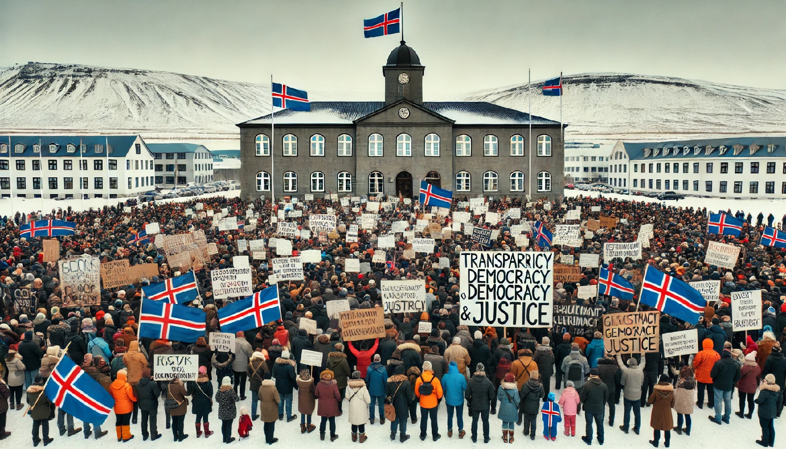

2025-02-10 15:30:12

O povo da Islândia tomou ações significativas para afastar governos considerados corruptos e incompetentes, especialmente após a crise financeira de 2008. Alguns dos principais eventos e ações incluem:
1. Protestos em massa (2008-2009): A crise financeira de 2008, que afetou severamente a Islândia, gerou uma onda de protestos populares. A população estava revoltada com a gestão do governo e a responsabilidade dos bancos na crise. Os cidadãos se manifestaram nas ruas em grandes números, pedindo a renúncia dos responsáveis pelo colapso econômico.
2. Renúncia do governo (2009): Após meses de protestos, o governo liderado pelo Primeiro-Ministro Geir H. Haarde, do Partido da Independência, foi forçado a renunciar. Essa ação resultou em um novo governo interino e na convocação de eleições antecipadas.
3. Investigação e responsabilização dos responsáveis pela crise: A Islândia foi uma das primeiras nações a investigar a fundo os responsáveis pela crise financeira. Em 2010, foi formada uma Comissão de Inquérito Parlamentar para investigar as causas da crise e a má gestão pública. Isso levou à responsabilização de vários banqueiros, reguladores financeiros e políticos envolvidos na crise.
4. Nova Constituição (2011-2013): A Islândia iniciou um processo de elaboração de uma nova constituição, uma das primeiras emendas sendo feita de forma colaborativa com a população. Cidadãos foram envolvidos directamente na criação de um esboço para a nova constituição, utilizando plataformas digitais para enviar sugestões, o que gerou um maior envolvimento cívico e transparência. Embora o processo tenha sido interrompido, a nova constituição foi vista como uma tentativa de corrigir falhas democráticas e aumentar a responsabilidade política.
5. Punir os culpados: Ao contrário de muitos outros países, onde os responsáveis pela crise financeira não enfrentaram consequências significativas, na Islândia houve a prisão de vários banqueiros e figuras do setor financeiro. Isso foi um reflexo de uma política de "justiça" que foi aplicada para restaurar a confiança pública.
6. Reformas no sistema político e financeiro: O sistema financeiro foi reestruturado, com medidas de regulação mais rigorosas e políticas que visavam maior transparência e responsabilidade na gestão pública e privada. Além disso, houve uma revisão das políticas de empréstimos e garantias do governo, com maior foco na proteção dos cidadãos em situações de crise.
Essas ações coletivas do povo islandês são frequentemente citadas como um exemplo de como uma nação pode enfrentar crises políticas e econômicas com mobilização popular, responsabilização e reformas profundas.
fasgoncalves / chatGPT (2025)
Um exemplo de cidadania de um povo que soube combater a tirania idêntica à que enfrentarmos em Portugal.
E cito aqui o que disse, há alguns anos, a magistrada Maria José Morgado sobre Portugal- “Uma Cultura de impunidade, nepotismo e amiguismo tem feito de Portugal um país pobre e atrasado".